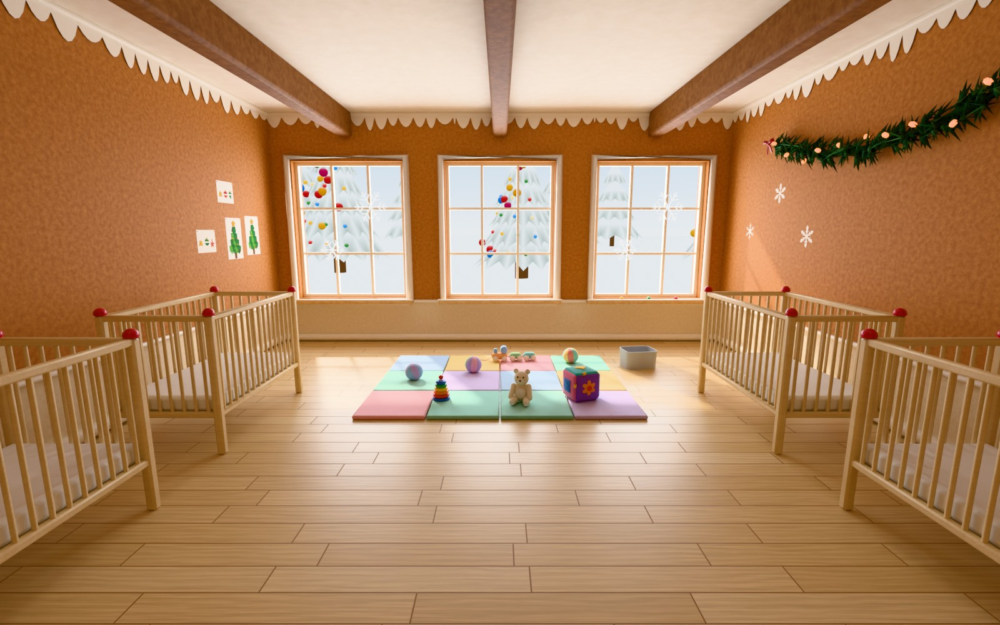
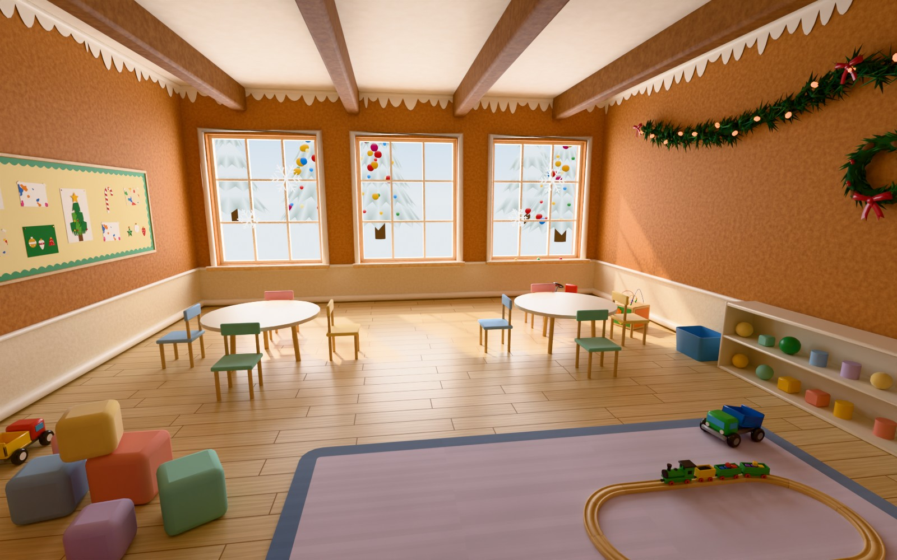

Opening the front door
Loading the rooms
Pictures of the rooms
Your browser could not show the walk-through, so here are the same rooms as pictures, all dressed for Christmas with gingerbread walls, white icing trim, and maple floors.


